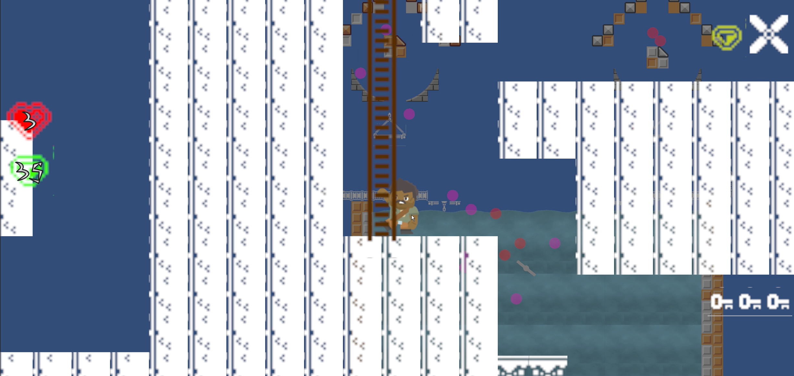
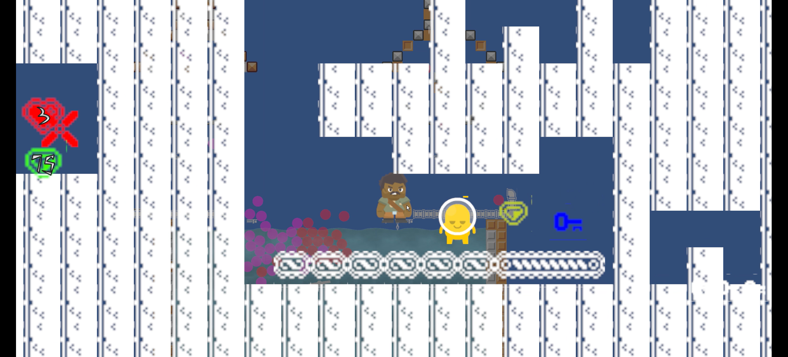
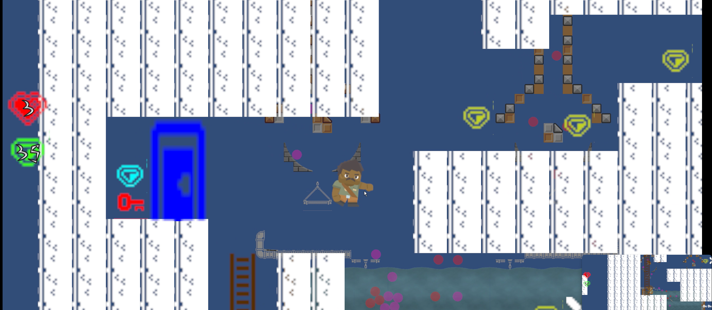
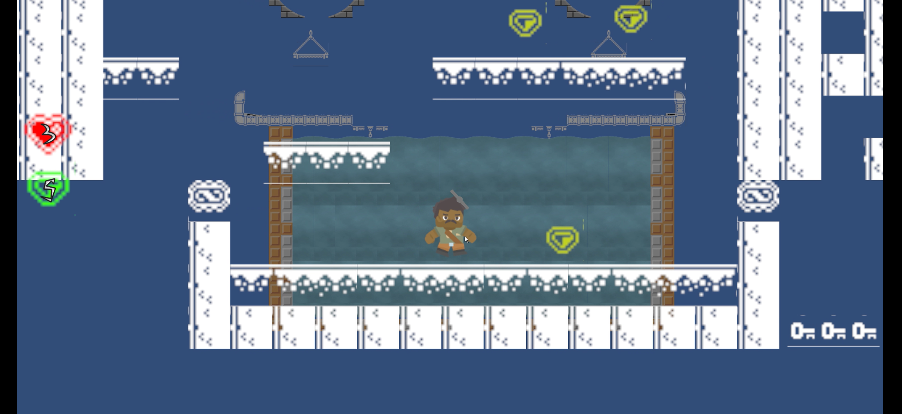

My first Unity game. A 2D project focused on gameplay systems, UI, and audio.
Category: Game Projects | Role: Solo Developer | GitHub
MiltyKitty is a 2D Unity game made while learning the fundamentals of game development. It focuses on movement, enemy interaction, damage feedback, animation, audio, and UI.
The project was built to practise connecting small systems into one playable loop, rather than leaving mechanics as isolated tests.
The result is a simple but useful foundation project that shows early experience with Unity scenes, scripts, prefabs, collision, and feedback systems.
I built the player controller, enemy logic, damage system, menus, score tracking, health UI, audio setup, and animation connections.
I used this project to understand how Unity components, scripts, events, and prefabs work together inside a complete scene.
View Repo


